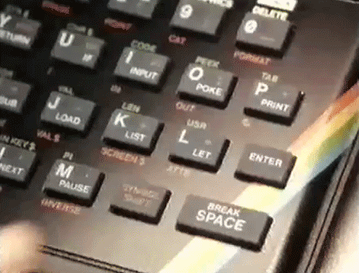

AI to ZX 🧠🌈
Overview
AI to ZX is a collection of artificial intelligence (AI) and computational demonstrations running on the legendary ZX Spectrum computer.
This project bridges the gap between retro computing nostalgia and modern AI concepts by implementing classic algorithms within 1980s hardware constraints.
Programs are written in ZX BASIC, compiled to Z80 machine code, and run in a web-based emulator (JSSpeccy).
Prerequisites
- 🐍 Python 3.11+ to run the ZX BASIC compiler
- bash for scripts
- curl, unzip, jq
Getting Started
- Clone the repo
git clone --recursive https://github.com/JGalego/AI-to-ZX.git - Download JSSpeccy
./scripts/download-jsspeccy.sh - Build demos
./scripts/build.sh - Serve locally
python3 -m http.server 8000 --directory public
References
Books 📚
- (Brain & Brain, 1984) Artificial Intelligence on the Spectrum Computer: Make Your Micro Think
- (Hartnell, 1984) Exploring Artificial Intelligence on your Spectrum+ and Spectrum
- (James, 1984) Artificial Intelligence in Basic
- (Jones & Fairhurst, 1984) Artificial Intelligence: ZX Spectrum
- (Monteil & Schomberg, 1985) Programmes d'Inteligence Artificielle en BASIC
- (Williams, 1986) The Intelligent Micro: Artificial Intelligence for Microcomputers
Blogs ✍️
- (Ai-Ai-OH, 2025) AI and Me: From ZX Spectrums to chatbots
- (CppCMS, 2019) Modern AI and Deep Learning on ZX Spectrum
- (MarkRound, 2021) DevOps for the Sinclair Spectrum - Part 1
- (MrKWatkins, 2025a) Teaching an AI to Play ZX Spectrum Games
- (MrKWatkins, 2025b) More on Teaching an AI to Play ZX Spectrum Games
- (RichHewlett, 2021) Coding in Spectrum Basic Again
Tools & Software
- BAS2TAP - convert BASIC ASCII to TAP tape images
- FUSE - ZX Spectrum emulator
- ZX BASIC - BASIC cross-compiler for the Spectrum
- JSSpeccy - JavaScript ZX Spectrum emulator
Miscellaneous
- Load ZX - museum dedicated to Sinclair machines
- Spectrum Computing - archive of software and resources
- World of Spectrum - Spectrum resources
- ZX Art - Spectrum graphics and art
- ZXDB - open database of Sinclair info
- ZXInfo - web app for ZXDB search

Made with ❤️ by JGalego